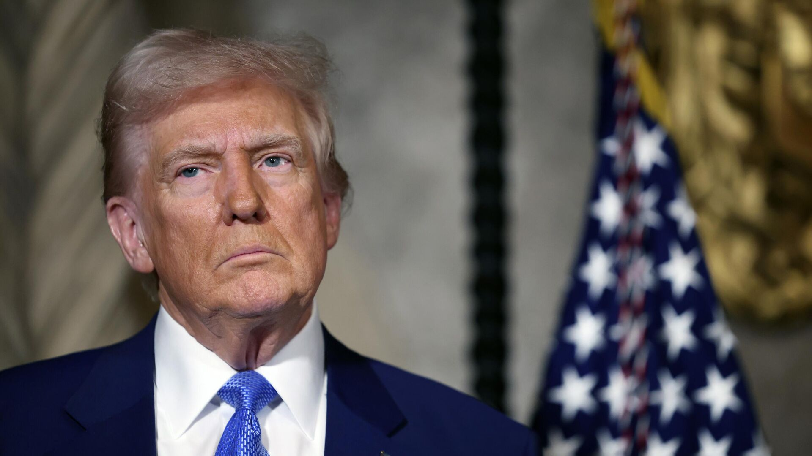

Политика Трампа подрывает международный порядок, основанный на правилах, союзах и институтах.
Скептицизм в отношении международных соглашений ослабляет коллективную безопасность и вдохновляет популистские и авторитарные режимы по всему миру.

Мир в условиях эрозии правил
В долгосрочной перспективе это делает глобальную систему более нестабильной, конфликтной и непредсказуемой.